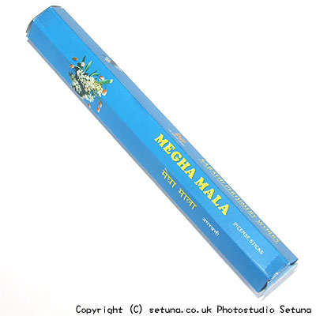

白花系のパッケージのお香です。
ネット上でもブーケ系とか白花系とか良く書かれていますが、その手の匂いは感じられません。
直接嗅ぐとかすかに石けんによく似た香りがします。
火を点けて焚き始めると、ヒノキやブナと言った広葉樹系の焚火に似た匂いと共に安息香や乳香の香りがかすかに香ります。
期待はずれのパッケージものの代表例といっても過言ではないと思います。
恐らく日本で云う所の「日常香」にあたると思います。
香りもいい匂いという様なものではなく、むしろ、家の中で焚く必要性があるのか?と考えてしまう位です。
購入した方で、何か良い香りにできないかとお困りの方がいらっしゃいましたら、HEM社のマグノリア香と一緒に焚くと、ベルガモット系の良い香りになりますので、お試しください。
また、このメガマーラ香自体、すき間のないタイプのお香にあたりますので、焚き合わせるには難しいタイプになります。
混ぜるといった程度のものにしかなりませんので、相手のお香がくすんでしまうのが特徴です。
また新たに合いそうなものが見つかりましたら更新しておきますので、時々のぞいてみて下さい。
